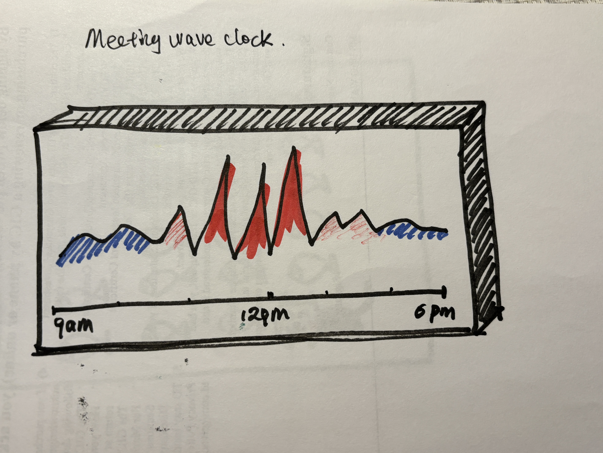
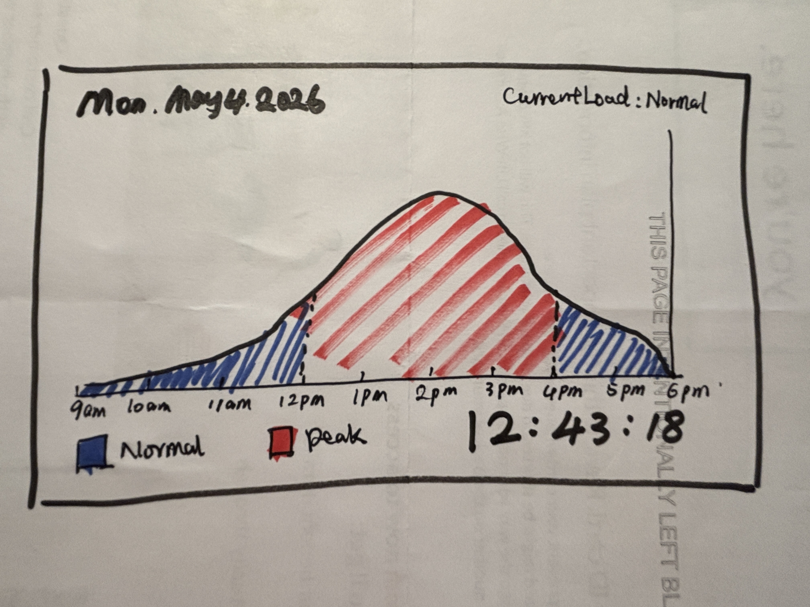

Final Clock 1 — Meeting Wave Clock
Sketch iteration documentation (paper / hand-drawn photos)


Design process: I designed time as a continuous workload wave instead of separate calendar blocks. Based on feedback, I simplified the wave shape, improved the red/blue contrast, and made the time axis clearer so users can quickly identify peak meeting periods. I applied readability, visual hierarchy, color contrast, and motion to make the clock easy to scan.
Time encoding: Hour is shown through the wave trend across the day; minute is represented by wave amplitude and meeting intensity; second is shown through subtle motion; red highlights peak meeting density.
Self-reflection / future work: I would connect this clock to real calendar data so the wave reflects actual meetings. I would also add hover details for each meeting period so users can inspect specific events without cluttering the main view.